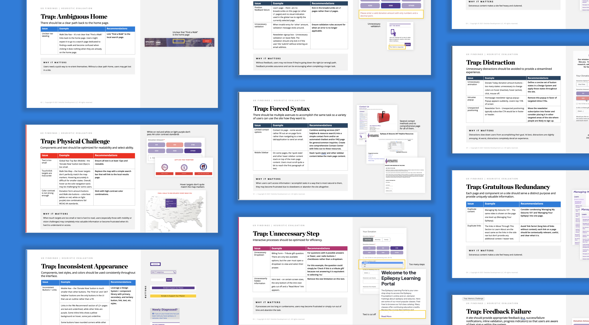

<!DOCTYPE html>
<html lang="en">

<head>
	<title>Emily Porat | Health Nonprofit Discovery</title>
	<link rel="stylesheet" type="text/css" href="styles/global.css">
	<link rel="stylesheet" type="text/css" href="styles/global-mobile.css">
	<link rel="stylesheet" type="text/css" href="styles/nav.css">
	<link rel="stylesheet" type="text/css" href="styles/projects.css">
	<script src="https://ajax.googleapis.com/ajax/libs/jquery/1.9.1/jquery.min.js"></script>
	<link rel="icon" type="image/x-icon" href="pics/favicon.svg"/>
	<!-- Icons -->
	<script defer src="https://use.fontawesome.com/releases/v5.13.0/js/all.js"></script>
	<script defer src="https://use.fontawesome.com/releases/v5.13.0/js/v4-shims.js"></script>
	<!-- Global site tag (gtag.js) - Google Analytics -->
	<script async src="https://www.googletagmanager.com/gtag/js?id=UA-119412150-1"></script>
	<script>
		window.dataLayer = window.dataLayer || [];
		function gtag(){dataLayer.push(arguments);}
		gtag('js', new Date());

		gtag('config', 'UA-119412150-1');

      // load other reused files
      $(function() {
      	$('#nav').load('http://emilyporat.com/nav.html');
      	$('#footer').load('http://emilyporat.com/footer.html');
      });
  </script>
</head>

</html>
<body class="preload">
	<meta name="viewport" content="width=device-width">
	<div id="nav"></div>
	<div id="arrow-up" onclick="slideUp()"><i class="fa fa-angle-up"></i></div>	

<!-- 	<div id="modal_background">
		<div id="prompt" class="pw_prompt">
			<h3>Health Nonprofit Discovery</h3>
			<p>👋 Hey there! I can't talk about this project publicly, so shoot me an <a href="mailto:emporat@gmail.com" target="_blank">email</a> if you'd like to learn more.</p>
			<label>Password:</label>
			<input id="pw_prompt_input1" type="password"></input>
			<button class="secondary-btn" onclick="checkPassword()">Submit</button>
		</div>
	</div> -->

	<div class="full-width" style="background-color: var(--purple);">
		<div class="title-wrapper animate-reveal animate-first">
			<div class="title">
				<div>
					<h4>2021 • Deloitte Digital</h4>
					<h1 style="color: black">Health Nonprofit Discovery</h1>
				</div>
			</div>
		</div> 

		
	</div>


	<div class="panel context">
		<div class="context-summary">
			<h2>Project Overview</h2>

			<h3>
				This client's website has a wealth of information, but users struggle to find what they need and tend to abandon the site quickly. Additionally, the organization is still struggling to reach a large segment of their target audience: individuals living with a particular neurological disorder who want to learn about the condition or get involved with the community.
			</h3>
			
			<div class="space"></div>
			
			<h4>Approach</h4>
			<p>
				Our team evaluated the client's digital footprint from a UX, content, and data perspective with the goals of 1) understanding why users can't find what they need and 2) providing strategic recommendations to improve the overarching user experience.
			</p>
			
			<div class="space"></div>

			<h4>Outcome</h4>
			<p>
				We delivered a comprehensive report that included all our stakeholder and user research findings and outputs from collaborative Product Visioning + Roadmapping sessions.
			</p>

		</div>

		<div class="context-specifics">
			<h4>Team</h4> 
			<div class="context-description"><p>Me, Junior Designer, Product Manager, Content Strategist, Data Strategists, Engagement Manager</p></div>

			<h4>Responsibilities</h4> 
			<div class="context-description"><p>I led the UX workstream with minimal support from a senior designer. I presented all design findings to the client and mentored a junior designer.</p></div>

			<h4>Role</h4>
			<div class="context-description"><p>I led the UX workstream with minimal support from a senior designer. I presented all design findings to the client and mentored a junior designer.</p></div>

			<h4>Tools</h4>
			<div class="context-description"><p>Mural, PPT</p></div>
			
			<h4>Length</h4>
			<div class="context-description"><p>3 months</p></div>


		</div>
	</div>

	<div class="full-width-mid-page">
		<div class="panel dark" style="background-color: var(--purple);">
			<div style="z-index: 2; padding: 10%; position: absolute; width: -webkit-fill-available; top: 50%; -ms-transform: translateY(-50%); transform: translateY(-50%);">
				<h4>How might we</h4>
				<h2 style="color: black">transform insights on organizational challenges and user needs into actionable takeaways?</h2>				
			</div>
			
		</div>
	</div>


	<div class="panel" id="Component Audit">
		<h2 class="body right">Process</h2>
			<div class="body right">
				<h3>We had 12 weeks and a client with a large appetite for interviews. I owned the following activities:</h3>
				<ul>
					<li>Heuristic Evaluation - Usability analysis of key pages on the client's website.</li>
					<li>Stakeholder Research - Guided conversations with (17 members of) internal leadership and (11) external partners to understand goals, priorities, and challenges.</li>
					<li>User Research - Guided conversations and usability testing sessions with (16) end users to understand their lived experiences and approach to using the website.</li>
					<li>Synthesis - Affinity diagramming to pull out key themes</li>
					<li>Modest & Mindsets + Journey Maps - Approach + experience driven models that will help us understand user needs and prioritize features.</li>
				</ul>
			</div>
	</div>

	<div class="panel" id="Component Audit">
		<h2 class="body right">What We Learned</h2>
			<div class="body right">

				<h3>Usability issues stem from organizational issues</h3>
				<p>As the organization has grown, its website has not effectively scaled with it. Siloed systems and unclear strategy have prevented departments from forming effective content and data governance processes. This trickles down into every aspect of the end-user web experience, from information overload to the lack of engagement and personalization strategy.</p>

				
				
				<h3>Information overload hinders understandability and findability</h3>
				<p>The Information Architecture, navigation components, and Calls to Action are visually confusing and do not match user expectations. There are many inaccessible components across the site (inadequate color contrast or missing labels). Combined with the vast amount of information, the confusing structural organization of the site hinders users’ ability to find what they need efficiently.</p>

				

				<h3>To engage, users need to trust the organization</h3>
				<p>Many end users experience isolation, feeling overwhelmed, and frustrated during their diagnosis process. Most users want to learn about the basics of this health topic, treatment options, and first aid from a science-backed, up-to-date, reliable source. Users who are unfamiliar with the org need to build trust in the organization before committing to getting involved with their time, money, or other resources.</p>

				

				<h3>There is no “one size fits all” solution for improving reach and engagement</h3>
				<p>Getting diagnosed with and treating with this condition is highly personal, variable, and based on one’s access to specialized healthcare, background, trust in doctors, etc. It’s important to acknowledge the inherent health disparities that come with privilege (or lack thereof) – those who need the organization the most may never get engaged due to access barriers and lack of awareness. That's why it was so important to go past demographic-based Personas and delve into highly granular Mindsets, based off characteristic and attributes.</p>

				

			</div>
	</div>

<!-- 	<div class="panel" id="Component Audit">
		<h2 class="body right">Executive Summary: What We Learned</h2>
			<div class="body right">

			</div>
	</div> -->
	  	
  	<div id="footer"></div>
  	</meta>
  </body>

  <script src="js/general.js"></script>

</html>